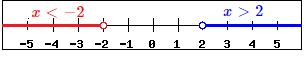

Absolute value is defined as distance from zero. Consider both integers \(5\) and \(-5\). Since both positive and negative \(5\) have a distance of \(5\) units from \(0\) on the number line, both have an absolute value of \(5\).
| \(\left|5\right|=5 \text{ and } \left|-5\right|=5\) | |
Thus when solving equations with absolute value we can end up with more than one possible answer. This is because the expression inside the absolute value can be either positive or negative and we must account for both possibilities when solving equations. This is illustrated in the following example.
| \(\left|x\right| = 7\) | ||Absolute value can be positive or negative |
| \(x=7\) or \(x=-7\) | Our Solution
Type x=7 or x=-7 in WeBWorK
|
Notice that we have determined two possibilities, both the positive and negative. Either way, the absolute value of our number will be positive \(7\).
Important: First isolate the absolute value, then "remove the absolute value" by considering both the positive and negative solutions separately. Notice in the next two examples, all the numbers outside of the absolute value are "moved to the other side" first before we remove the absolute value bars and consider both positive and negative solutions.
| \(5+\abs(x) = 8\) | Notice absolute value is not alone on the LHS Isolate the absolute value first |
| \(\underline{-5\phantom{12345}-5}\) | Subtract \(5\) from both sides |
| \(\left|x\right| = 3\) | Absolute value can be positive or negative |
| \(x=3\) or \(x=-3\) | Our Solution |
Check our two solutions: Substitute both back in the original equation \(5+\left|x\right|= 8\).
| \(\underline{x=3:}\) | \(\underline{x=-3:}\) |
| \(5+\left|3\right|\) | \(5+\left|-3\right|\) |
| \(5+3 = 8\checkmark\) | \(5+3 = 8 \checkmark\) |
| Both \(x=3\) and \(x=-3\) satisfy the equation | \( \checkmark\) |
| \(-4\left|x\right|=-20\) | Notice absolute value is not alone on the LHS Isolate the absolute value first |
| \(\overline{-4}\phantom{123456}\overline{-4}\) | Divide both sides by \(-4\) |
| \(\left|x\right| = 5\) | Absolute value can be positive or negative |
| \(x=5\) or \(x=-5\) | Our Solution |
Notice we never combine what is inside the absolute value with what is outside the absolute value. This is very important as it will often change the final result to an incorrect solution. The next example requires two steps to isolate the absolute value. The idea is the same as a two-step equation, add or subtract, then multiply or divide.
| \(5\left|x\right|-4 = 26\) | Notice absolute value is not alone on the LHS Isolate the absolute value first |
| \(\underline{+4\phantom{12}+4}\) | Add \(4\) to both sides |
| \(5\left|x\right| = 30\) | Absolute value still not alone |
| \(\overline{5\,}\phantom{12345}\overline{\,5\,}\) | Divide both sides by \(5\) |
| \(\left|x\right| = 6\) | Absolute value can be positive or negative |
| \(x=6\) or \(x=-6\) | Our Solution |
Again we see the same process: isolate the absolute value first, then consider the positive and negative solutions. Often the absolute value will have more than just a variable in it. In this case we will have to solve the resulting equations when we consider the positive and negative possibilities. This is shown in the next example.
| \(\left|2x-1\right| = 7\) | Absolute value can be positive or negative |
| \(2x-1=7\)
|
Two equations to solve |
Now notice we have two equations to solve, each equation will give us a different solution. Both equations solve (separately) like any other two-step equation.
| \(2x-1=7\) | \(\phantom{1234}\) OR | \(2x-1=-7\) |
| \(\underline{+1\,+1}\) | \(\phantom{1234}\) | \(\underline{+1\phantom{12}+1}\) |
| \(2x=8\) | \(\phantom{1234}\) | \(2x=-6\) |
| \(\overline{2}\phantom{1234}\overline{2}\) | \(\phantom{1234}\) | \(\overline{2}\phantom{1234}\overline{\,2\,}\) |
| \(x=4\) | \(\phantom{1234}\) OR | \(x=-3\) |
| \(\phantom{1}\) | \(x = 4\) or \(x = -3\) | Our Solution |
Again, it is important to remember that the absolute value must be alone first before we consider the positive and negative possibilities. This is illustrated in the below example.
| \(2-4\left|2x + 3\right| = -18\) |
To get the absolute value alone we first need to subtract the \(2\) from both sides, then divide by \(-4\) (the coefficient on the absolute value). Notice we cannot combine the \(2\) and \(-4\) because they are not like terms: the \(-4\) is multiplied by the absolute value expression. Also notice we do not distribute the \(-4\) into the absolute value. This is because the numbers outside cannot be combined with the numbers inside the absolute value. Thus we get the absolute value alone in the following way:
| \(2-4\left|2x + 3\right| = -18\) | Notice absolute value is not alone |
| \(\underline{-2\phantom{1234567890123}-2}\) | Subtract \(2\) from both sides |
| \(-4\left|2x + 3\right| = - 20\) | Absolute value still not alone |
| \(\overline{-4\,}\phantom{123456789}\overline{\,-4\,}\) | Divide both sides by \(-4\) |
| \(\left|2x+3\right| = 5\) | Absolute value can be positive or negative |
| \(2x+3=5\) or\(\phantom{1234}\) \(2x+3=-5\) | Two equations to solve |
Now we solve these two remaining equations to find our solutions.
| \(2x+3=5\) | \(\phantom{1234}\) OR | \(2x+3=-5\) |
| \(\underline{-3\,-3}\) | \(\phantom{1234}\) | \(\underline{-3\,\,\,\,\,-3}\) |
| \(2x=2\) | \(\phantom{1234}\) | \(2x=-8\) |
| \(\overline{2}\phantom{12345}\overline{2}\) | \(\phantom{1234}\) | \(\overline{2}\,\,\,\,\,\,\,\,\,\,\,\,\overline{\,2\,}\) |
| \(x=1\) | \(\phantom{1234}\)OR | \(x=-4\) |
| \(\phantom{1}\) | \(x = 1\) or \(x = -4\) | Our Solution |
As we are solving absolute value equations it is important to be aware of special cases. Remember the result of an absolute value must always be positive. Notice what happens in the next example.
| \(7+\left|2x-5\right|=4\) | Notice absolute value is not alone |
| \(\underline{-7\phantom{123456789}-7}\) | Subtract \(7\) from both sides |
| \(\left|2x-5\right| = \color{red}{-3}\) | STOP! Result of absolute value can't be negative! |
| No solution | Our Solution
Type No solution in WeBWorK
|
Notice in the above example, the absolute value expressions equals a negative number! This is impossible with absolute value. When this occurs we STOP and conclude there is no solution.
When an inequality has an absolute value we will have to remove the absolute value in order to graph the solution or give interval notation. The way we remove the absolute value depends on the direction of the inequality symbol.
Consider \(\left|x\right|\lt 2\).
Absolute value is defined as distance from zero. Another way to read this inequality would be the distance from zero is less than \(2\). On a number line we will shade all points that are less than \(2\) units away from zero.

This graph looks just like the graphs of the three part compound inequalities! When the absolute value is less than a positive number we will remove the absolute value by changing the problem to a three part inequality, with the negative value on the left and the positive value on the right: \[\left|x\right| \lt 2 \text{ is equivalent to } \color{blue}{-2 \lt x \lt 2}\] as the graph above illustrates.
Consider \(\left|x\right|\gt 2\).
Absolute value is defined as distance from zero. Another way to read this inequality would be the distance from zero is greater than \(2\). On the number line we shade all points that are more than \(2\) units away from zero.

This graph looks just like the graphs of the OR compound inequalities! When the absolute value is greater than a positive number we will remove the absolute value by changing the problem to an OR inequality, the first inequality looking just like the problem with no absolute value, the second flipping the inequality symbol and changing the value to a negative: \[\left|x\right| \gt 2 \text{ is equivalent to } \color{blue}{x\gt 2} \text{ or }\color{red}{ x \lt -2}\] as the graph above illustrates.
For all absolute value inequalities we can also express our answers in interval notation which is done the same way it is done for standard compound inequalities.
We can solve absolute value inequalities much like we solved absolute value equations.
Solve, graph, and give interval notation for the solution.
| \(\left|4x-5\right|\geq 6\) | Absolute value is greater than a positive number, use OR inequality |
| \(4x-5\geq 6\) OR \(4x-5\leq -6\) | Solve both inequalities |
| \(\underline{+5\phantom{1}+5}\phantom{1234567}\underline{+5\phantom{12}+5}\) | Add \(5\) to both sides of each inequality |
| \(4x\geq 11\) OR \(4x\leq -1\) | Divide both sides by \(4\) |
| \(\overline{4}\phantom{1234}\overline{4}\phantom{1234}\overline{4}\phantom{12345}\overline{4}\) | \(\,\) |
| \(\color{blue}{x\geq \dfrac{11}{4}}\) OR \(\color{red}{x\leq -\dfrac{1}{4}}\) | Graph the solutions |
 |
Our graph |
| \(\left(-\infty,-\dfrac{1}{4}\right]\cup\left[\dfrac{11}{4},\infty\right)\) | Interval notation |
| \(-4-3\left|x\right|\leq -16\) | Isolate the absolute value: Add \(4\) to both sides |
| \(\underline{+4\phantom{123456789}+4}\) | \(\,\) |
| \(-3\left|x\right|\leq -12\) | Divide both sides by negative 3 |
| \(\overline{-3}\phantom{123456}\overline{-3}\) | Dividing by a negative switches the inequality direction |
| \(\left|x\right|\color{red}{\geq} 4\) | Absolute value is greater, use OR |
| \(\color{blue}{x\geq 4}\) OR \(\color{red}{x\leq -4}\) | Graph |
 |
Our graph |
| \((-\infty,-4]\cup[4,\infty)\) | Interval notation |
In the previous example, we cannot combine \(-4\) and \(-3\) because they are not like terms, the \(-3\) has an absolute value term attached. So we must first clear the \(-4\) by adding \(4\), then divide by \(-3\). The next example is similar.
| \(9-2|4x+1|\gt 3\) | Subtract \(9\) from both sides |
| \(\underline{-9\phantom{12345678910}-9}\) | \(\,\) |
| \(-2|4x+1|\gt -6\) | Divide both sides by \(-2\) |
| \(\overline{-2}\phantom{123456789}\overline{-2}\) | Dividing by a negative switches the inequality direction |
| \(|4x+1|\color{red}{\lt} 3\) | Absolute value is less, use three part inequality |
| \(-3\lt 4x+1\lt 3\) | Subtract 1 from all three parts |
| \(\underline{-1\phantom{12345}-1\phantom{1}-1}\) | \(\,\) |
| \(-4\lt 4x \lt 2\) | Divide all three parts by \(4\) |
| \(\overline{4}\phantom{123}\overline{4}\phantom{123}\overline{4}\) | \(\,\) |
| \(\color{green}{-1\lt x \lt\dfrac{1}{2}}\) | Graph |
 |
Our graph |
| \(\left(-1,\dfrac{1}{2}\right)\) | Interval notation |
In the previous example, we cannot distribute the \(-2\) into the absolute value. We can never distribute or combine things outside the absolute value with what is inside the absolute value. Our only way to solve is to first isolate the absolute value by clearing the values around it, then either make a compound inequality (an OR or a three part) to solve.
It is important to remember as we are solving these equations, the absolute value is always positive. If we end up with an absolute value less than a negative number, then we will have no solution! Similarly, if we end up with an absolute value greater than a negative, this will always happen. Here the answer will be all real numbers.
Solve, graph, and give interval notation for the solution.
| \(12+4|6x-1|\lt 4\) | Subtract \(12\) from both sides |
| \(\underline{-12\phantom{123456789}-12}\) | \(\,\) |
| \(4\left|6x-1\right|\lt -8\) | Divide both sides by \(4\) |
| \(\overline{4}\phantom{12345678910}\overline{4}\) | Dividing by a positive: DON'T switch the inequality direction |
| \(\left|6x-1\right|\lt -2\) | STOP:Absolute value can't be less than a negative! |
| No solution | Our Solution |
| \(5-6|x+7|\leq 17\) | Subtract \(5\) from both sides |
| \(\underline{-5\phantom{123456789}-5}\) | \(\,\) |
| \(-6\left|x+7\right|\leq 12\) | Divide both sides by \(-6\) |
| \(\overline{-6}\phantom{12345678910}\overline{-6}\) | Dividing by a negative switches the inequality direction |
| \(\left|x+7\right|\color{red}{\geq} -2\) | Absolute value always greater than negative! |
| \(x\) can be any real number: \(-\infty\lt x \lt\infty\) or\(\phantom{1234}\) | Our Solution: Inequality notation |
| \((-\infty, \infty)\) | Our Solution: Interval notation |
Recall absolute value is defined as distance from zero. We now consider some absolute value applications.
Suppose the distance between \(x\) and \(4\) is exactly \(7\). Determine \(x\).
| \(\color{red}{\text{distance }} \color{green}{\text{between }} x \text{ and } 4 \color{red}{\text{ is exactly }} \color{blue}{7}\) | Translate the problem into symbols: distance is absolute value, between is subtraction, \(=\) represents is |
| \(\color{red}{|} x \color{green}{-} 4\color{red}{|} \color{red}{=} \color{blue}{7}\) | Absolute value can be positive or negative |
| \(x-4=7\) or \(x-4=-7\) | Two equations to solve |
| \(x-4=7\) | \(\phantom{1234}\) OR | \(x-4=-7\) |
| \(\underline{+4\,+4}\) | \(\phantom{1234}\) | \(\underline{+4\,\,\,\,\,+4}\) |
| \(x=11\) | \(\phantom{1234}\) OR | \(x=-3\) |
| \(\phantom{1}\) | \(x = 11\) or \(x = -3\) | Our Solution |
Suppose the distance between \(x\) and zero is less than or equal to \(6\). Determine \(x\).
| \(\color{red}{\text{distance }} \color{green}{\text{between }} x \text{ and } 0 \color{red}{\text{ is less than or equal to }} \color{blue}{6}\) | Translate the problem into symbols: distance is absolute value, between is subtraction, \(\leq\) represents less than or equal to |
| \(\color{red}{|} x \color{green}{-} 0\color{red}{|} \color{red}{\leq} \color{blue}{6}\) | Simplify the absolute value expression |
| \(\left|x\left|\leq 6\) | Absolute value is less, use three part inequality |
| \(-6\leq x \leq 6\) | Inequality notation |
Suppose the distance between \(x\) and \(-14\) is greater than \(3\). Determine \(x\).
| \(\color{red}{\text{distance }} \color{green}{\text{between }} x \text{ and } \)-14\( \color{red}{\text{ is greater than }} \color{blue}{3}\) | Translate the problem into symbols: distance is absolute value, between is subtraction, \(\gt\) represents greater than |
| \(\color{red}{|} x \color{green}{-} (-14)\color{red}{|} \color{red}{\gt} \color{blue}{3}\) | Simplify \(-(-14)=+14\) |
| \(\color{red}{|} x + 14\color{red}{|} \color{red}{\gt} \color{blue}{3}\) | Absolute value is greater than positive, use OR |
| \(x+14 \gt 3 \phantom{12} \text{ OR }\phantom{12} x+14\lt -3\) | Subtract \(14\) |
| \(\underline{-14\,-14\phantom{123456789}-14\phantom{1}-14}\) | \(\,\) |
| \(x\gt -11\phantom{12} \text{ or }\phantom{12} x\lt -17\) | Our Solution: compound inequality |
| \((-\infty,-17)\cup(-11,\infty)\) | Our Solution: interval notation |